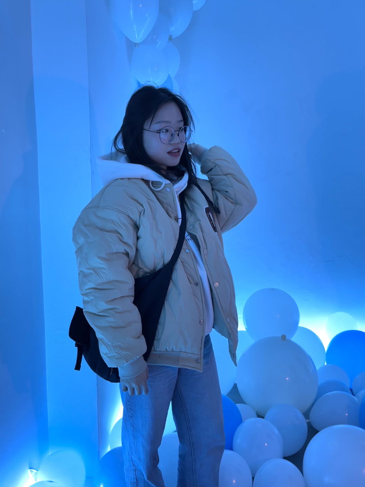

Welcome to Qingqing Jiang's Personal Page

About Me
I am Qingqing Jiang, a master's student at Peking University. My primary research interests include geology, paleoclimatology, and astronomical chronology, with a focus on the Paleocene-Eocene Thermal Maximum (PETM). I am also exploring Earth system models to understand the orbital forcing on climate systems.
Research
My research focuses on the Paleocene-Eocene Thermal Maximum (PETM), investigating its climatic and sedimentological impacts using XRF analysis and astronomical chronology.
- Sedimentation rates and orbital forcing during the PETM.
- Earth system modeling using cGENIE to simulate climate impacts.
Publications
In Prep.
- Astrochronology of Paleocene-Eocene Thermal Maximum at ODP Site 1172
Hobbies
Here are some of my hobbies, including outdoor adventures and travel experiences:


Contact
Feel free to reach out to me at:
- Email: qqjiang@stu.pku.edu.cn
- ResearchGate: Qingqing Jiang
- Address: No.5 Yiheyuan Road, Haidian District, Beijing 100871, P.R.China